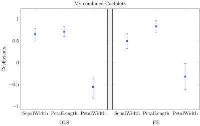
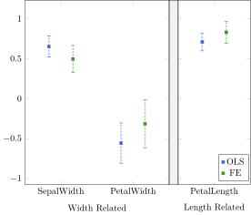

Plot Combination
There are four types of plots in Coefplots.jl: Coefplot, MultiCoefplot, GroupedCoefplot, GroupedMultiCoefplot.
MultiCoefplot
We continue the example in quick start. We have also ready seen MultiCoefplot() in the previous chapter.
m = MultiCoefplot(coefplots_withfe, coefplots_pool; title = Label(content="My combined Coefplots"),
xlabel = Label(content="Regressor Names"),
ylabel = Label(content="Coefficients"),
note = Note(content="This is my note."))
m_plot = plot(m)GroupedCoefplot
We also provide method GroupedCoefplot() to plot Coefplot objects side by side
g = GroupedCoefplot("OLS" => coefplots_pool, "FE" => coefplots_withfe;
title = Label(content="My combined Coefplots"),
ylabel = Label(content="Coefficients"),
width = 350)
g_plot = plot(g)
Not limited to plot multiple regressions, GroupedCoefplot() can also divide the coefficients in a single regression into multiple groups however the user wants. To make this happen, we first extract the regression results in DataFrame form,
df = deepcopy(coefplots_pool.data) # extract the regression results from Coefplot object
df| Row | varname | b | se | dof |
|---|---|---|---|---|
| String | Float64 | Float64 | Float64 | |
| 1 | SepalWidth | 0.650837 | 0.0666474 | 146.0 |
| 2 | PetalLength | 0.709132 | 0.0567193 | 146.0 |
| 3 | PetalWidth | -0.556483 | 0.127548 | 146.0 |
we add our categorization (it doesn't have to be called coefgroup), use DataFrames.jl's groupby() to produce a GroupedDataFrame, and then plug it in our GroupedCoefplot() method.
df.coefgroup = ["Width Related", "Length Related", "Width Related"]
grouped_df = groupby(df, [:coefgroup])
g2 = GroupedCoefplot(grouped_df; title = Label(content="My combined Coefplots"),
ylabel = Label(content="Coefficients"),
width = 200)
g2_plot = plot(g2)GroupedMultiCoefplot
This type is reserved for scenarios when the user wants to have side-by-side plots and also overlapping plots. One can achieve this by plug in Pair{Any, MultiCoefplot} ... or Pair{Any, GroupedCoefplots} ... when invoking GroupedMultiCoefplot(). For example,
df = deepcopy(coefplots_withfe.data)
df.coefgroup = ["Width Related", "Length Related", "Width Related"]
grouped_df = groupby(df, [:coefgroup])
g3 = GroupedCoefplot(grouped_df)
gmc = GroupedMultiCoefplot("OLS" => g2, "FE" => g3; show_legend=[false, true], # which subplot should show their legend
legend = Coefplots.Legend(at=(0.98,0.02),
anchor = Symbol("south east")))
gmc_plot = plot(gmc)